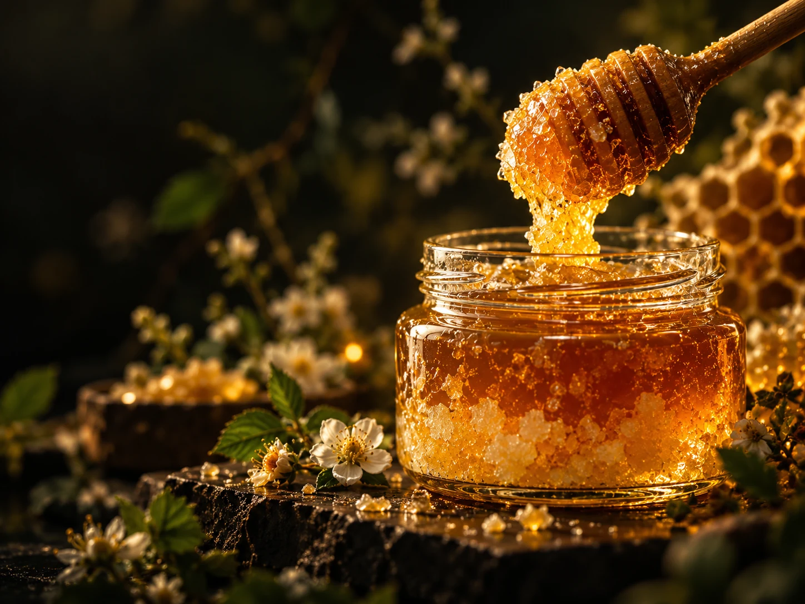
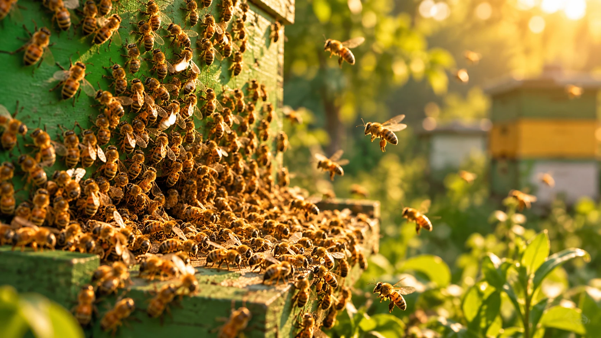
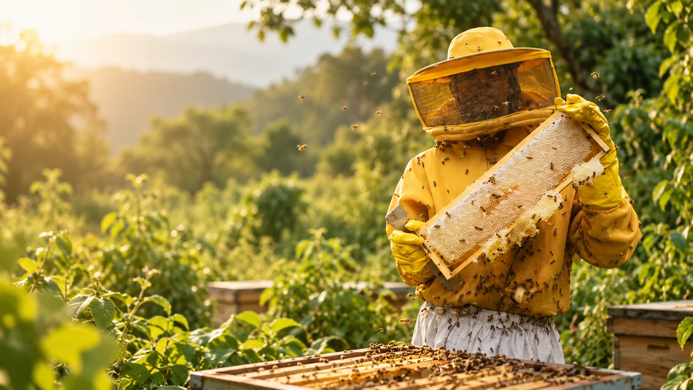
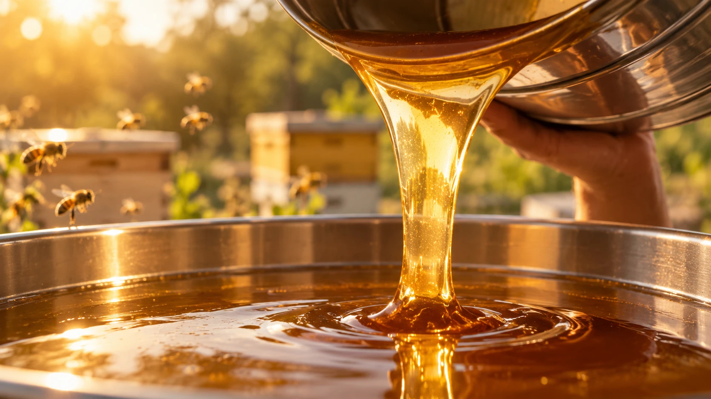

Cosmos Lab
Ciência, natureza e o universo das abelhas.
Conteúdo editorial para entender o que existe por trás do mel: comportamento das abelhas, botânica, paisagem, origem e curiosidades.
Mel & Natureza
O que significa florada silvestre?
Como a paisagem, a estação e a diversidade de plantas aparecem no sabor, aroma e cor do mel.
Ler artigo →
Mel & Natureza
Por que o mel cristaliza?
Entenda por que um mel líquido pode ficar cremoso ou granulado sem deixar de ser mel.
Ler artigo →
Própolis
O que é própolis verde?
Origem botânica, Minas Gerais e a relação com o alecrim-do-campo.
Ler artigo →
Abelhas & Ciência
Como as abelhas usam o Sol para encontrar flores
A dança do requebrado transforma direção e distância em uma mensagem para a colônia.
Ler artigo →
Abelhas & Ciência
Por que os favos são hexagonais?
Uma arquitetura natural eficiente para construir células vizinhas e armazenar recursos.
Ler artigo →
Especial interativo
Quanto trabalho existe dentro de um pote de mel?
Use a calculadora e traduza gramas de mel em uma escala aproximada de flores, voo e trabalho coletivo.
Ler + experimentar →